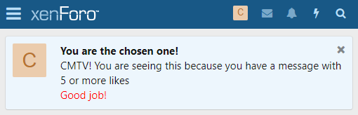
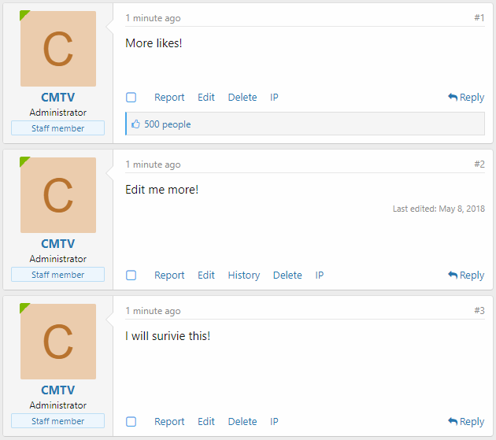
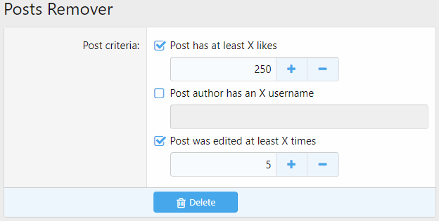

Критерии
Когда XenForo необходимо протестировать что-то (пользователя/страницу/сообщение...) на соответствие некоторым выбранным пользователем условиям (критериям), он использует систему критериев.
Некоторые места, где используется система критериев:
- Трофеи
- Акции групп пользователей
- Уведомления на форуме
Дополнения также могут использовать эту систему.
Типы критериев
Учитывайте следующие критерии:
- У пользователя есть/нет аватара
- У пользователя более 300 сообщений
- Пользователь сейчас создает тему
- Выбранная вкладка навигации текущего пользователя - "Members"
Первые два критерия относятся к самому пользователю. Остальные относятся к его текущему местонахождению на форуме. Похоже, у нас разные категории или типы критериев.
В XenForo из коробки есть два типа критериев:
- Пользовательские критерии - обработка критериев о самом пользователе
- Критерии страницы - обработка критериев о текущем местоположении пользователя + критерии времени
Некоторые дополнения могут также добавлять свои собственные типы критериев.
С точки зрения кода типы критериев - это просто дочерние элементы абстрактного класса AbstractCriteria. Они содержат код для обработки выбранных критериев определенного типа.
AbstractCriteria, в свою очередь, предоставляет общие методы работы с критериями независимо от их значения.
Критерий
Критерий - это предварительно определенное условие, выбираемое пользователем.
Почему выбираются? Потому что администраторы/пользователи могут выбирать их (помните процесс создания трофеев).
Почему предопределены? Потому что XenForo уже знает, как их обрабатывать (используя методы классов критериев).
Каждый критерий состоит из двух частей: правило и (необязательно) данные.
Правило
Правило критерия - это просто укус в snake case (words_are_separated_with_underscore_character).
У него две основные цели:
- Он используется для различения критериев
- При выполнении сопоставления правило преобразуется в camel case имя метода, который обрабатывает этот критерий (смотрите «Как работают критерии»).
Данные
Это просто необязательный массив дополнительных данных критерия. Например, критерий «Пользователь отправил не менее X сообщений» имеет массив данных с одним элементом: количество сообщений.
Как работает система критериев
В этих разделах мы опишем, как работает система критериев от А до Я.
Шаблон
Все начинается с кода шаблона. Вот как критерии выглядят внутри шаблонов:
<xf:checkbox label="Criteria container">
<!-- Criterion -->
<xf:option name="foo_criteria[criterion_1_rule][rule]" value="criterion_1_rule" ... />
<!-- Criterion with data -->
<xf:option name="bar_criteria[criterion_2_rule][rule]" value="criterion_2_rule" ... >
<xf:... name="bar_criteria[criterion_2_rule][data][param_1]" ... />
<xf:... name="bar_criteria[criterion_2_rule][data][param_2]" ... />
</xf:option>
</xf:checkbox>
Как видите, критерий - это просто флажок с дополнительными полями ввода внутри (данные критерия). Разберем код:
foo_criteriaиbar_criteriaявляются входными контейнерами, и обычно частиfooиbarотносятся к типу критериев. Например,user_criteria[...]сообщает нам, что этот критерий принадлежит критериям пользователя.value="criterion_1_rule"иvalue="criterion_2_rule", очевидно, являются правилами критериев.
Note
Имейте в виду, что criterion_1/2_rule в атрибутах name не обязательно должны быть правилами критериев! Это просто имена входных контейнеров. вы можете легко написать <xf:option name="foo[bar][rule]" value="criterion_rule" />, и это будет работать правильно. Правило критерия будет criterion_rule, а не bar.
(Необязательно) Сохранение выбранных критериев
Внутри контроллера данные формы критериев из предыдущего раздела могут быть отфильтрованы, закодированы и сохранены в столбцах базы данных типа mediumblob для лучших времен:
$fooCriteriaInput = $this->filter('foo_criteria', 'array');
$barCriteriaInput = $this->filter('bar_criteria', 'array');
$form->basicEntitySave($bazEntity, [
'foo_criteria' => $fooCriteriaInput,
'bar_criteria' => $barCriteriaInput
]);
Пример структуры $bazEntity:
public static function getStructure(Structure $structure)
{
$structure->table = 'xf_baz';
$structure->shortName = 'XF:Baz';
$structure->primaryKey = 'baz_id';
$structure->columns = [
'baz_id' => ['type' => self::UINT, 'autoIncrement' => true],
'foo_criteria' => ['type' => self::JSON_ARRAY, 'default' => [], 'required' => 'please_select_criteria_that_must_be_met'],
'bar_criteria' => ['type' => self::JSON_ARRAY, 'default' => []]
];
return $structure;
}
Объект критериев
Для использования системы критериев нам необходимо создать объект критериев из выбранных данных формы критериев. Это можно сделать с помощью метода приложения criteria():
/** @var \Qux\Criteria\Foo $fooCriteria */
$fooCriteria = \XF::app()->criteria('Qux:Foo', $bazEntity->foo_criteria);
/** @var \Qux\Criteria\Bar $barCriteria */
$barCriteria = \XF::app()->criteria('Qux:Bar', $bazEntity->bar_criteria);
С этого момента мы можем использовать все функции AbstractCriteria плюс все, что мы дополнительно написали в дочерних классах Foo/Bar.
Соответствие
Когда мы хотим проверить, соответствует ли что-то (Пользователь) выбранным критериям или нет, мы используем метод isMatched:
$visitor= \XF::visitor();
if ($fooCriteria->isMatched($visitor))
{
// Посетитель соответствует всем выбранным критериям
}
else
{
// Посетитель не соответствует одному или нескольким критериям
}
isMacthed() преобразует правило критерия в верблюжье имя метода с префиксом _match: criterion_1_rule > _matchCriterion1Rule и пытается найти такой метод внутри класса типа критериев (класс Foo в нашем примере):
// Qux/Criteria/Foo.php
protected function _matchCriterion1Rule(array $data, \XF\Entity\User $user)
{
/* ... Критерии обработки ... */
return true; // Пользователь соответствует текущим критериям
/* OR */
return false; // Пользователь не соответствует текущим критериям
}
Если какой-либо метод не может быть найден в классе, isMatched() вызывает isUnknownMatched(), поведение которого может быть установлено в предках AbstractCriteria (по умолчанию возвращает false).
Если ни один критерий не был выбран, isMatched() возвращает переменную $matchOnEmpty, которая по умолчанию равна true. вы можете изменить это поведение, вызвав $crteriaObj->setMatchOnEmpty(false) перед использованием метода isMatched():
$visitor= \XF::visitor();
$fooCriteria->setMatchOnEmpty(false);
if ($fooCriteria->isMatched($visitor))
{
// Посетитель соответствует всем выбранным критериям
}
else
{
// Посетитель не соответствует одному или нескольким критериям
}
Как работают критерии (пример)
Представьте, что вы хотите наградить трофеем всех пользователей, у которых есть аватар и которые получили не менее 5 лайков.
При создании трофея вы выбираете критерии «У пользователя есть аватар» (правило has_avatar) и «Пользователь получил не менее X лайков» (правило like_count). Последний также имеет массив данных с одним элементом: количество лайков.
Выбранные Вами критерии хранятся в столбце user_criteria таблицы xf_trophy.
Когда XenForo решает проверить, наградить пользователя трофеем или нет, он преобразует правила в имена методов camel case:
like_count>_matchLikeCount()has_avatar>_matchHasAvatar()
Поскольку оба выбранных критерия являются критериями пользователя, XenForo обращается к классу критериев пользователя и пытается найти в нем такие методы:
// XF/Criteria/User.php
//...
protected function _matchLikeCount(array $data, \XF\Entity\User $user)
{
return ($user->like_count && $user->like_count >= $data['likes']);
}
//...
protected function _matchHasAvatar(array $data, \XF\Entity\User $user)
{
return $user->user_id && ($user->avatar_date || $user->gravatar);
}
//...
Если все адресованные методы возвращают true, наш пользователь соответствует выбранным критериям и, следовательно, будет награжден призом.
Если некоторые методы не могут быть найдены в классе критериев пользователя, XenForo вызывает метод isUnknownMatched(), который, в свою очередь, запускает событие criteria_user, позволяя разработчикам надстроек добавить свои обработчики настраиваемых критериев (смотрите "Пример настраиваемого критерия пользователя/страницы").
Данные дополнительных критериев
Иногда при написании кода шаблона критериев вам необходимо получить доступ к дополнительным данным, которые не передаются с параметрами представления.
Вот для чего существует метод getExtraTemplateData(). По умолчанию он содержит существующие группы пользователей, языки, стили, часовые пояса.
вы можете переопределить этот метод в своем классе типов настраиваемых критериев.
Добавление данных в тип настраиваемых критериев
Переопределите метод getExtraTemplateData() в Вашем пользовательском классе критериев:
public function getExtraTemplateData()
{
$templateData = parent::getExtraTemplateData();
$additionalData = [];
/** @var \XF\Repository\Smilie $smilieRepo */
$smilieRepo = \XF::repository('XF:Smilie');
$additionalData['smilies'] = $smilieRepo->findSmiliesForList()->fetch();
return array_merge($templateData, $additionalData);
}
Добавление данных к существующим типам критериев
вы можете использовать прослушиватель событий criteria_template_data, чтобы добавить свои собственные дополнительные данные критериев:
public static function criteriaTemplateData(array &$templateData)
{
/** @var \XF\Repository\Smilie $smilieRepo */
$smilieRepo = \XF::repository('XF:Smilie');
$templateData['smilies'] = $smilieRepo->findSmiliesForList()->fetch();
}
Шаблон "helper_criteria"
Всякий раз, когда Вы, как создатель дополнения, хотите, чтобы целевой пользователь/администратор мог выбирать критерии пользователя/страницы/другого дополнения (или даже все сразу), вы можете просто использовать helper_criteria.
Короче говоря, helper_criteria - это шаблон администратора, который позволяет использовать интерфейс на основе флажков типов критериев в нескольких местах без копирования и вставки одного и того же кода.
helper_criteria содержит макросы двух типов: *criteria_name*_tabs и *criteria_name*_panes для каждого типа критериев. Пример: макросы user_tabs и user_panes для типа критериев пользователя.
Вкладки
Вкладки используются для различения различных типов критериев в используемом шаблоне:
При использовании вкладок первая часто содержит поля/параметры, не связанные с критериями. Затем идут вкладки критериев.
На изображении выше первая вкладка содержит параметры для уведомления. Первые две вкладки в красном поле относятся к типу критериев пользователя. Последний относится к типу критериев Страницы.
Вкладки в helper_criteria сгруппированы по макросам типов критериев:
<xf:macro name="foo_tabs" arg-container="" arg-active="">
<xf:set var="$tabs">
<a class="tabs-tab{{ $active == 'foo' ? ' is-active' : '' }}"
role="tab" tabindex="0" aria-controls="{{ unique_id('criteriaFoo') }}">Foo criteria</a>
<a class="tabs-tab{{ $active == 'foo_extra' ? ' is-active' : '' }}"
role="tab" tabindex="0" aria-controls="{{ unique_id('criteriaFooExtra') }}">Foo criteria extra</a>
</xf:set>
<xf:if is="$container">
<div class="tabs" role="tablist">
{$tabs|raw}
</div>
<xf:else />
{$tabs|raw}
</xf:if>
</xf:macro>
В приведенном выше коде, foo - это тип критерия. В нем есть две вкладки, одна для общих критериев foo, а другая для дополнительных критериев foo.
Панели
Панели просто содержат критерии.
Как и вкладки, панели в helper_criteria сгруппированы по макросам типов критериев:
<xf:macro name="foo_panes" arg-container="" arg-active="" arg-criteria="!" arg-data="!">
<xf:set var="$panes">
<li class="{{ $active == 'foo' ? ' is-active' : '' }}" role="tabpanel" id="{{ unique_id('criteriaFoo') }}">
<xf:checkboxrow label="Criteria group 1">
<xf:option name="foo_criteria[criterion_1_rule][rule]" value="criterion_1_rule" ... />
<xf:option name="foo_criteria[criterion_2_rule][rule]" value="criterion_2_rule" ... />
</xf:checkboxrow>
<xf:checkboxrow label="Criteria group 2">
<xf:option name="foo_criteria[criterion_3_rule][rule]" value="criterion_3_rule" ... />
<xf:option name="foo_criteria[criterion_4_rule][rule]" value="criterion_4_rule" ... />
</xf:checkboxrow>
</li>
</xf:set>
<xf:if is="$container">
<ul class="tabPanes">
{$panes|raw}
</ul>
<xf:else />
{$panes|raw}
</xf:if>
</xf:macro>
Использование "helper_criteria"
Чтобы использовать функцию "helper_criteria", вам необходимо включить ее макросы.
Подготовка данных
Этот раздел можно пропустить, если у вас нет Ваших выбранных критериев, сохраненных где-то в базе данных, или если тип критерия, который вы хотите использовать, не требует дополнительных данных.
Прежде всего, вам нужно получить сохраненные выбранные критерии и создать на их основе объект критериев. В этом разделе мы будем использовать критерии страницы в качестве примера:
$savedCriteria = /* Как-нибудь получить... */
// Объект критериев
$criteria = $this->app()->criteria('XF:Page', $savedCriteria)->getCriteriaForTemplate();
// Критерии дополнительных данных
$criteriaData = $criteria->getExtraTemplateData();
$viewParams = [
/* ... */
'criteria' => $criteria,
'criteriaData' => $criteriaData
];
return $this->view(/* ... */, $viewParams);
В том числе без вкладок
Чтобы включить критерии без вкладок, вам нужно использовать тег <xf:macro... с атрибутом arg-container, установленным на 0:
<xf:macro template="helper_criteria" name="page_panes" arg-container="0" arg-criteria="{$criteria}" arg-data="{$criteriaData}" />
Если у вас нет сохраненных критериев, вы можете просто передать пустой массив {{ [] }} атрибуту arg-criteria. Не забудьте заменить page в page_panes на имя типа критерия, который вы хотите использовать.
Имейте в виду, что все критерии заключены в тег <li>, поэтому вам нужно будет применить некоторые стили CSS (например, list-style-type: none;).
С вкладками
Чтобы использовать вкладки критериев, вам необходимо организовать страницу. Придерживайтесь следующей примерной структуры:
<xf:form ... class="block">
<div class="block-container">
<!-- Вкладки -->
<h2 class="block-tabHeader tabs hScroller" data-xf-init="h-scroller tabs" role="tablist">
<span class="hScroller-scroll">
<!-- Основная вкладка, на которой расположены поля/параметры -->
<a class="tabs-tab is-active" role="tab" tabindex="0" aria-controls="MAIN_TAB_ID">Заголовок главной вкладки</a>
<!-- Вкладки критериев -->
<xf:macro template="helper_criteria" name="page_tabs" arg-userTabTitle="Custom tab name (optionally)" />
</span>
</h2>
<!-- Панели -->
<ul class="block-body tabPanes">
<!-- Основная панель -->
<li class="is-active" role="tabpanel" id="MAIN_TAB_ID">
<!-- Поля и параметры -->
</li>
<!-- Панели критериев -->
<xf:macro template="helper_criteria" name="page_panes"
arg-criteria="{$criteria}"
arg-data="{$criteriaData}" />
</ul>
<xf:submitrow sticky="true" icon="save" />
</div>
</xf:form>
Опять же, если у вас нет сохраненных данных или даже не предполагается, что они есть, передайте {{ [] }} атрибуту arg-criteria.
Добавление типа настраиваемого критерия в "helper_criteria"
Если вы хотите добавить пользовательский тип критериев к шаблону helper_criteira, вам нужно будет создать модификацию шаблона шаблона helper_criteria.
Перейдите в "Appearance > Template modifications" в ACP, перейдите на вкладку "Admin" и нажмите кнопку "Add template modification".
Мы хотим добавить нашу вкладку и панель в самый низ шаблона, поэтому переключите "Search type" на "Regular expression".
Введите /$/ в поле "Find".
Наконец, добавьте вкладку и код макроса панели в поле "Replace". Пример:
<xf:macro name="foo_tabs" arg-container="" arg-active="">
<xf:set var="$tabs">
<a class="tabs-tab{{ $active == 'foo' ? ' is-active' : '' }}"
role="tab" tabindex="0" aria-controls="{{ unique_id('criteriaFoo') }}">Foo criteria</a>
<a class="tabs-tab{{ $active == 'foo_extra' ? ' is-active' : '' }}"
role="tab" tabindex="0" aria-controls="{{ unique_id('criteriaFooExtra') }}">Foo criteria extra</a>
</xf:set>
<xf:if is="$container">
<div class="tabs" role="tablist">
{$tabs|raw}
</div>
<xf:else />
{$tabs|raw}
</xf:if>
</xf:macro>
<xf:macro name="foo_panes" arg-container="" arg-active="" arg-criteria="!" arg-data="!">
<xf:set var="$panes">
<li class="{{ $active == 'foo' ? ' is-active' : '' }}" role="tabpanel" id="{{ unique_id('criteriaFoo') }}">
<xf:checkboxrow label="Criteria group 1">
<xf:option name="foo_criteria[criterion_1_rule][rule]" value="criterion_1_rule" ... />
<xf:option name="foo_criteria[criterion_2_rule][rule]" value="criterion_2_rule" ... />
</xf:checkboxrow>
<xf:checkboxrow label="Criteria group 2">
<xf:option name="foo_criteria[criterion_3_rule][rule]" value="criterion_3_rule" ... />
<xf:option name="foo_criteria[criterion_4_rule][rule]" value="criterion_4_rule" ... />
</xf:checkboxrow>
</li>
</xf:set>
<xf:if is="$container">
<ul class="tabPanes">
{$panes|raw}
</ul>
<xf:else />
{$panes|raw}
</xf:if>
</xf:macro>
Теперь вы можете использовать свои критерии везде (смотрите "Using helper_criteria").
Пример критерия пользовательского пользователя/страницы
Допустим, мы хотим создать критерий для проверки, есть ли у нашего пользователя X или более лайков на одно сообщение или нет.
Поскольку наш критерий относится к пользователю, мы создадим критерий, который принадлежит критериям пользователя.
Добавление модификации шаблона
Прежде всего, нам нужно добавить наш критерий в список критериев пользователя. Перейдите на страницу "Template modifications" в ACP, выберите вкладку "Admin" и нажмите кнопку "Add template modification" в правом верхнем углу.
Warning
Если вкладки "Admin" нет, убедитесь, что вы включили режим разработки!
Мы будем изменять шаблон helper_criteria, поэтому запишите его в поле "Template". В этом примере я буду использовать likes_on_single_message "Modification key" для этой модификации шаблона.
Наш критерий - лайки на сообщениях. Это означает, что он должен находиться в разделе "Content and achievements". Это означает, что нам просто нужно найти <!--[XF:user:content_bottom]--> и заменить его следующим кодом:
<xf:option name="user_criteria[likes_on_single][rule]" value="likes_on_single" selected="{$criteria.likes_on_single}" label="Likes on single message:">
<xf:numberbox name="user_criteria[likes_on_single][data][likes]" value="{$criteria.likes_on_single.likes}" size="5" min="0" step="1" />
</xf:option>
$0
С этого момента мы уже можем видеть и даже устанавливать значение для нашего критерия при создании трофеев, уведомлений и рекламных акций для групп пользователей.
Добавление прослушивателя событий кода
Мы создали свой критерий. Но это неизвестно для XenForo, который всегда будет возвращать false при совпадении с такими критериями. Нам нужно сообщить XenForo, что делать, если он соответствует неизвестным критериям.
Перейдите на страниц "Development > Code event listener" и нажмите кнопку "Add code event listener".
В поле "Listen to event" выберите criteria_user (user, потому что наш критерий принадлежит критериям пользователя). В поле "Execute callback" мы должны указать класс и метод, который будет вызываться при совпадении критериев.
Создайте файл Listener.php в корневой папке аддона, если вы еще этого не сделали, и добавьте туда новый метод criteriaUser:
<?php
namespace YOUR_ADDON_ID;
class Listener
{
public static function criteriaUser($rule, array $data, \XF\Entity\User $user, &$returnValue)
{
}
}
вы можете заполнить поля "Class" и "Method" с помощью YOUR_ADDON_ID\Listener и criteriaUser соответственно.
Критерий обработки
Так как наш метод criteriaUser запускается для каждого неизвестного критерия, нам нужно убедиться, что $rule равно likes_on_single (правило, которое мы указали в разметке HTML):
public static function criteriaUser($rule, array $data, \XF\Entity\User $user, &$returnValue)
{
switch ($rule)
{
case 'likes_on_single':
/** Код обработки здесь! */
break;
}
}
Теперь нам нужно написать код, который фактически проверяет, есть ли у пользователя сообщение с X или большим количеством лайков.
Этого легко добиться с помощью простого SQL-запроса, который выбирает одну запись из xf_post с более чем X лайками (столбец likes), а user_id равен текущему идентификатору пользователя.
Итак, вот запрос:
SELECT `likes` FROM `xf_post` WHERE `user_id` = ? ORDER BY `likes` DESC LIMIT 1
И код метода:
public static function criteriaUser($rule, array $data, \XF\Entity\User $user, &$returnValue)
{
switch ($rule)
{
case 'likes_on_single':
// Получение базы данных
$db = \XF::db();
// Запрос к базе данных для выбора максимального количества лайков для одного поста пользователя
$query = "SELECT `likes` FROM `xf_post` WHERE `user_id` = ? ORDER BY `likes` DESC LIMIT 1";
// Получение максимального количества лайков
$likes = $db->fetchOne($query, [$user->user_id]);
// Проверяем, что у нас есть результат из базы данных (мы ожидаем число)
if (is_int($likes)) {
// Возвращает true, если у пользователя есть сообщение с X или более лайками, или false, если его нет
$returnValue = ($likes >= $data['likes']);
} else {
$returnValue = false;
}
break;
}
}
Обратите внимание на следующее:
- Мы используем переменную
$userдля получения текущего совпадающего пользователя. Мы можем использовать эту переменную, поскольку наш критерий принадлежит критерию Пользователь. - Мы можем получить доступ к данным через массив
$data. Он содержит данные из полей мы добавили в модификации шаблона. Мы добавили только один<xf:numberbox...атрибутnameкоторого равенuser_criteria[likes_on_single][data][likes]. Вот почему мы можем использовать$data['likes']в приведенном выше коде.
Все сделано прямо сейчас. Давай проверим!
Тестирование (трофей)
Создайте трофей "All for one". На вкладке "User criteria" поле "Likes on single message", например, 5.
Затем создайте тестовое сообщение где-нибудь на своем форуме, а затем поставьте лайк пять раз для пяти разных пользователей (или просто установите вручную значение столбца likes).
Затем перейдите в "Tools > Cron entries" и запустите "Update user trophies", нажав кнопку со стрелками и кружком.
Хорошо!
Warning
Если вы не получили трофей "All for one", попробуйте выйти из системы, войти в систему и повторно запустить cron "Update user trophies".
Тестирование (уведомление)
Перейдите в "Communication > Notices" и нажмите кнопку "Add notice". На вкладке "User criteria", установите поле "Likes on single message", опять же, 5. Сохраните уведомление.
Затем создайте тестовое сообщение где-нибудь на своем форуме, а затем поставьте лайк пять раз для пяти разных пользователей (или просто установите вручную значение столбца likes).
Теперь вы должны увидеть уведомление:

вы можете скачать исходники дополнения, созданные на основе этого примера (2.0.10).
Пример типа настраиваемого критерия
Imagine we are creating an addon (addon ID: PostsRemover) for removing all posts that match selected criteria. A list of available criteria:
- Пост имеет не менее X лайков
- Автор сообщения имеет имя пользователя X
- Сообщение редактировалось не менее X раз
- Сообщение редактировалось не более X раз
- Пост был опубликован до X
- Пост был опубликован после X
Очевидно, что для таких критериев нам понадобится новый тип критериев: Критерии публикации.
Класс типа критерия
Мы должны начать с создания нового класса Post, который наследует AbstractCriteria в каталоге Criteria нашего дополнения:
<?php
namespace PostsRemover\Criteria;
use XF\Criteria\AbstractCriteria;
class Post extends AbstractCriteria
{
}
Теперь нам нужно написать код для всех критериев, поддерживаемых дополнением. В этом примере я напишу код для первых трех критериев из списка выше:
<?php
namespace PostsRemover\Criteria;
use XF\Criteria\AbstractCriteria;
class Post extends AbstractCriteria
{
// У публикации не менее X лайков
protected function _matchLikeCount(array $data, \XF\Entity\Post $post)
{
return ($post->likes && $post->likes >= $data['likes']);
}
// Автор сообщения имеет имя пользователя X
protected function _matchUsername(array $data, \XF\Entity\Post $post)
{
return $post->username === $data['name'];
}
// Сообщение редактировалось не менее X раз
protected function _matchEditedCount(array $data, \XF\Entity\Post $post)
{
return $post->edit_count && $post->edit_count >= $data['count'];
}
/* ================ Обработка других критериев ================ */
}
Метод isMatched(...), используемый для вызова методов _match, который мы только что создали, принимает только сущность User, мы должны написать собственный вариант методов isMatched(), isUnknownMatched() и isSpecialMatched().
Поскольку мы создаем критерии публикации, нам нужно создать наш собственный метод isMatchedPost():
public function isMatchedPost(\XF\Entity\Post $post)
{
if (!$this->criteria)
{
return $this->matchOnEmpty;
}
foreach ($this->criteria AS $criterion)
{
$rule = $criterion['rule'];
$data = $criterion['data'];
$specialResult = $this->isSpecialMatchedPost($rule, $data, $post);
if ($specialResult === false)
{
return false;
}
else if ($specialResult === true)
{
continue;
}
$method = '_match' . \XF\Util\Php::camelCase($rule);
if (method_exists($this, $method))
{
$result = $this->$method($data, $post);
if (!$result)
{
return false;
}
}
else
{
if (!$this->isUnknownMatched($rule, $data, $post))
{
return false;
}
}
}
return true;
}
protected function isSpecialMatchedPost($rule, array $data, \XF\Entity\Post $post)
{
return null;
}
protected function isUnknownMatchedPost($rule, array $data, \XF\Entity\Post $post)
{
return false;
}
Мы просто использовали код метода isMatched(...), заменив переменную $user типа сущности User на переменную $post типа сущности Post.
Поскольку мы не планируем обрабатывать особые и неизвестные критерии, мы возвращаем null в isSpecialMatchedPost и false в методах isUnknownMathcedPost.
Шаблон
Оставив процесс добавления маршрута администратора, написания контроллера и выполнения других действий за кулисами, давайте перейдем прямо к коду шаблона нашей страницы:
<xf:title>Удаление сообщений</xf:title>
<xf:form action="{{ link('posts-remover/remove') }}" ajax="true" class="block">
<div class="block-container">
<xf:checkboxrow label="Post criteria">
<xf:option label="Post has at least X likes" name="post_criteria[like_count][rule]" value="like_count">
<xf:numberbox name="post_criteria[like_count][data][likes]" size="5" min="0" step="1" />
</xf:option>
<xf:option label="Post author has an X username" name="post_criteria[username][rule]" value="username">
<xf:textbox name="post_criteria[username][data][name]" ac="true" />
</xf:option>
<xf:option label="Post was edited at least X times" name="post_criteria[edited_count][rule]" value="edited_count">
<xf:numberbox name="post_criteria[edited_count][data][count]" size="5" min="0" step="1" />
</xf:option>
</xf:checkboxrow>
<!-- Код шаблона для других критериев -->
<xf:submitrow sticky="true" icon="delete"/>
</div>
</xf:form>
Соответствие критериям
В контроллере нашей страницы нам нужно создать метод под названием actionRemove для обработки нажатия кнопки «Удалить»:
public function actionRemove()
{
}
Во-первых, извлечем массив post_criteria из формы страницы:
public function actionRemove()
{
$postCriteriaInput = $this->filter('post_criteria', 'array');
}
Во-вторых, нам нужно создать объект критериев из полученных данных формы страницы:
public function actionRemove()
{
$postCriteriaInput = $this->filter('post_criteria', 'array');
/** @var \PostsRemover\Criteria\Post $postCriteria */
$postCriteria = $this->app()->criteria('PostsRemover:Post', $postCriteriaInput);
}
По умолчанию наше сообщение будет соответствовать пустым критериям (когда ничего не было выбрано), что приведет к удалению всех сообщений форума. Чтобы избежать этого, нам нужно вручную установить результат соответствия пустым критериям с помощью метода setMatchOnEmpty():
public function actionRemove()
{
$postCriteriaInput = $this->filter('post_criteria', 'array');
/** @var \PostsRemover\Criteria\Post $postCriteria */
$postCriteria = $this->app()->criteria('PostsRemover:Post', $postCriteriaInput);
$postCriteria->setMatchOnEmpty(false); // Если критерии не выбраны, ничего не будет удалено
}
Наконец, нам нужно сопоставить все сообщения на форуме по выбранным критериям. Если пост соответствует критериям, мы его удалим:
public function actionRemove()
{
$postCriteriaInput = $this->filter('post_criteria', 'array');
/** @var \PostsRemover\Criteria\Post $postCriteria */
$postCriteria = $this->app()->criteria('PostsRemover:Post', $postCriteriaInput);
$postCriteria->setMatchOnEmpty(false); // Если критерии не выбраны, ничего не будет удалено
// Получение всех сообщений на форуме
$posts = $this->finder('XF:Post')->fetch();
$deletedCounter = 0;
/** @var \XF\Entity\Post $post */
foreach ($posts as $post)
{
if ($postCriteria->isMatchedPost($post)) // Проверка публикации по выбранным критериям
{
$post->delete(); // Удаление, если публикация соответствует выбранным критериям
$deletedCounter++;
}
}
return $this->message('Done! ' . $deletedCounter . ' posts were removed!');
}
Note
Имейте в виду, что мы используем метод isMatchedPost($post) для версий XenForo ниже 2.1!
Warning
Как правило, извлекать все объекты из базы данных сразу ($this->finder('XF:Post')->fetch(); в приведенном выше коде) - плохая практика. На форуме могут быть миллионы сообщений, и выбор их всех одновременно будет очень долгим процессом, который может закончиться ошибкой.
Рассмотрите возможность использования системы заданий для работы с десятками (100+) элементов базы данных.
Тестирование
Пришло время протестировать наш тип пользовательских критериев!
Я создал три сообщения на своем тестовом форуме. Первый лайкнули 500 раз, второй отредактировали 5 раз. Третий - обычный нетронутый пост без лайков.

Теперь на нашей странице ACP "Posts Remover" выберите "Post has at least X likes" (со значением 250) и "Post was edited at least X times" (со значением 5):

Когда я нажал кнопку "Delete", я увидел сообщение о том, что ничего не было удалено. Почему? Очевидно, потому что нет постов с минимум 250 лайками и минимум 5 правками одновременно.
Поэтому нам нужно выбрать только первый критерий, а затем нажать "Delete". Это приведет к удалению сообщения с 500 лайками. Далее нам нужно выбрать только последний критерий и удалить преформу. Сообщение с 5 правками будет удалено.
В итоге выдержал только один тестовый пост:

вы можете скачать исходники дополнений, созданные на основе этого примера (2.0.10). вы найдете страницу ACP "Posts Remover" в разделе "Tools".